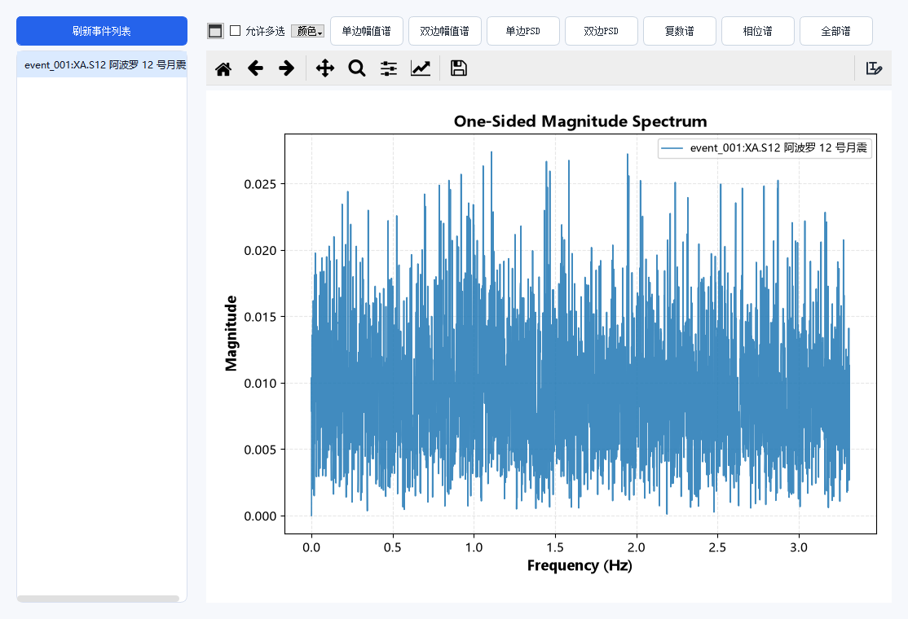

频谱分析
频谱是 SeisY 里参数最容易设错、也最容易误读的部分。这一章先把入口讲清楚， 再讲四个 FFT 参数怎么影响结果。
五个入口
| 菜单 | 画什么 | 用在哪 |
|---|---|---|
| 绘图 › 绘制振幅谱 | 当前事件的单边幅值谱 | 最常用，看主频 |
| 绘图 › 绘制多通道振幅谱 | 三个分量各一条曲线 | 比较分量差异 |
| 绘图 › 绘制时域与振幅谱 | 上图波形、下图频谱 | 写报告、对照 |
| 绘图 › 频谱分析查看器 | 独立窗口，七种谱可切换 | 批量对比多个事件 |
| 画布上框选区域 | 只对选中时段做频谱 | 分离不同震相 |
频谱分析查看器

菜单：绘图 › 频谱分析查看器。
左侧列出当前工程的全部事件，右侧是绘图区。上方七个按钮切换谱的类型：
| 按钮 | 纵轴含义 | 什么时候用 |
|---|---|---|
| 单边幅值谱 | 幅值（0 到奈奎斯特） | 看主频、找优势频段 |
| 双边幅值谱 | 幅值（−fs/2 到 +fs/2） | 检查信号是否实数、有无镜像 |
| 单边 PSD | 功率谱密度 | 比较不同采样率/长度的记录 |
| 双边 PSD | 功率谱密度 | 同上，需要负频率时 |
| 复数谱 | 实部与虚部 | 检查相位关系 |
| 相位谱 | 相位（弧度） | 判断滤波器相位、检查是否零相位 |
| 全部谱 | 以上全部 | 一次性导出图件 |
勾选 允许多选 可以同时画多个事件的谱做对比，颜色… 指定配色。
四个 FFT 参数
菜单：设置 › 绘制频谱设置。
| 参数 | 默认 | 含义 |
|---|---|---|
| 窗函数 | 矩形窗 | FFT 前乘的窗，减少频谱泄漏 |
| FFT 点数 | 自动（数据点数） | 补零或截断到的长度 |
| 去趋势 | 去均值（常数） | 去掉直流分量 |
| 平均方式 | 不分段（单次 FFT） | 是否分段做 Welch 平均 |
绘图形式（折线 / 火柴杆 / 折线 + 火柴杆）只影响观感，不影响数值。
频率分辨率
频率分辨率 = 采样率 / FFT 点数
采样率 6.625 Hz、6000 点的记录，FFT 点数取自动时分辨率是 6.625 / 6000 ≈ 0.0011 Hz；把 FFT 点数改成 1024，分辨率就降到 0.0065 Hz。 点数越多分辨率越细，但补零不会增加真实信息——补零只是把同一条曲线画得更密。
奈奎斯特频率
奈奎斯特频率 = 采样率 / 2
6.625 Hz 采样对应上限 3.3125 Hz。频谱图的横轴到 3.3 Hz 左右就结束，这不是 程序截断了数据，而是采样定理的硬限制。滤波截止频率超过这个值没有意义。
窗函数怎么选
| 窗 | 主瓣宽度 | 旁瓣 | 适用 |
|---|---|---|---|
| 矩形窗 | 最窄 | 最高 | 整周期信号、瞬态；默认 |
| 汉宁窗 | 中等 | 低 | 连续信号做谱估计，通用首选 |
| 汉明窗 | 中等 | 更低 | 同上，旁瓣衰减更快 |
| 布莱克曼窗 | 宽 | 极低 | 强弱信号共存、需要压制泄漏 |
| 巴特利特窗 | 中等 | 中 | 较少用 |
| 平顶窗 | 最宽 | 极低 | 测幅值，不测频率 |
主瓣越窄频率分辨越好，旁瓣越低幅值越准。二者不可兼得。
切换 FFT / CZT
绘图 › 切换频谱方法 (FFT/CZT)。
FFT 给出等间隔的频率点；CZT（线性调频 z 变换）可以在指定频段内加密采样。 低频段频率成分密集时（例如月球简正模、长周期面波），用 CZT 能在同样点数下把 0.001–0.01 Hz 这一段画得清楚得多，而不必把整条记录补零到几十万点。
导出与传递
| 命令 | 作用 |
|---|---|
| 绘图 › 导出当前频谱到文件 | 存成数据文件，可再导入 Excel/Python |
| 绘图 › 发送频谱到简正模工作台 | 把当前谱作为观测谱送进简正模反演 |
| 绘图 › 自定义采样绘图 | 指定采样点后绘图 |
常见问题
频谱是一堆毛刺，看不出峰？ 记录太短或没加窗。6000 点在 6.625 Hz 下只有 15 分钟，低频端分辨率有限。 换汉宁窗能显著减少泄漏造成的毛刺。
改了窗函数，峰的位置变了？ 窗函数会改变峰的宽度和高度，不应改变峰的位置。位置变了说明两次用的 FFT 点数或去趋势方式不同，检查「绘制频谱设置」。
为什么纵轴数值这么小？ 幅值谱没有归一化，数值取决于记录长度和单位。要比绝对值，先做去仪器响应 换成物理单位（见「去除仪器响应」一章）。